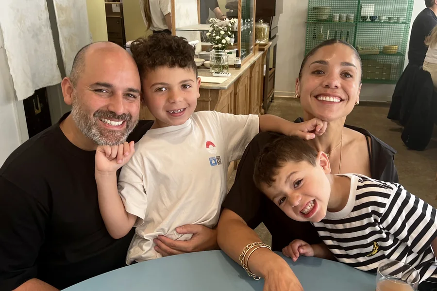
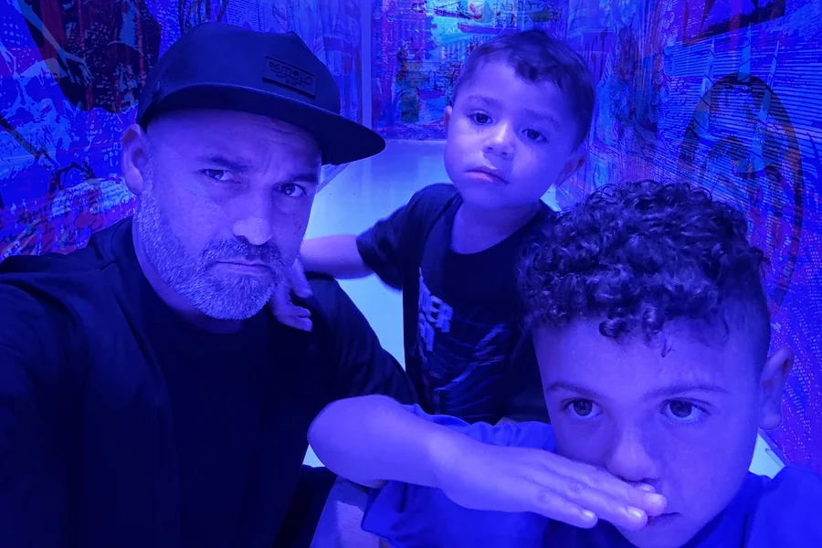
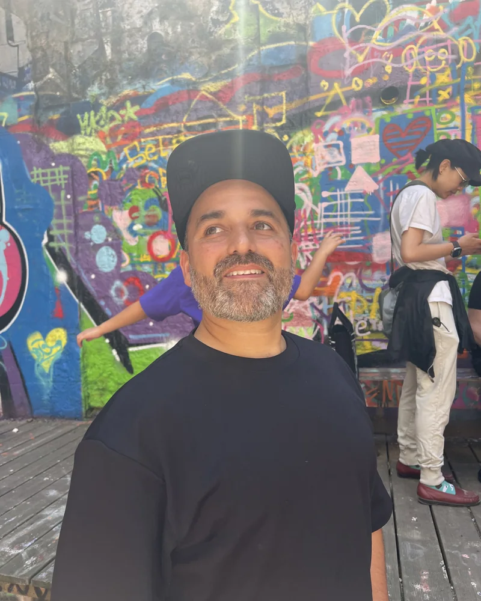
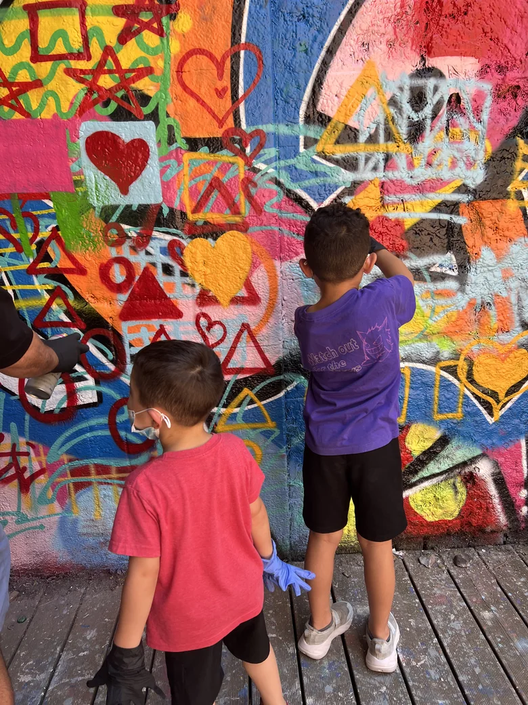
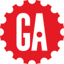

Born in Caracas.
Raised in Queens.
Vibing in LA.
I was born in Caracas, Venezuela, and came to the United States when I was three, a citizen by thirteen. My family worked hard to build something here: cleaning houses, working restaurants, making an honest living.
In college I worked in a warehouse. Hard, unglamorous manual labor. Early mornings, heavy loads, the kind of work you feel in your body at the end of the day. What stayed with me wasn't the work. It was who showed up to do it.
I learned early that the right two or three people, working without backup, can move mountains. Making something happen with no resources is not that different from making something happen with a great team and real stakes. You find the people who know how. You get to work. You figure it out.
I started as a graphic designer in print, editorial, and early web at The New Yorker, Wired, and Men's Vogue, where I learned what it means to have standards. Then I moved into products: MakerBot, Reserve, ClassPass, Google. There I learned the hardest design problems aren't visual; they're systems, organizational, and decision problems. That realization is what eventually pulled me toward building organizations and better products.
I have always loved making things. Letterpress prints. Furniture. 3D printed figures that end up in someone's hands. A deck can hide a weak idea behind a good story. A physical object can't. It's proof you actually did the work.


At Disney I built something. VP of Product Design across Disney+ and Hulu, leading design for the experiences subscribers encounter every day: discovery, personalization, browsing, and playback. A design organization of 40+, across both platforms, for hundreds of millions of subscribers worldwide.
Before Disney, I taught full-time at General Assembly. Ten-week immersive UX programs, five days a week. It forced me off the product and onto the person. I learned that teaching is not about talking. It is about creating the conditions where someone else can grow. That shifted how I think about management. The job is not to build empires. It is to build people. Some of my best hires came from that classroom.
The work I find most interesting is not the interfaces we ship. It is the conditions that allow us to ship better interfaces, repeatedly, over time. Hiring the right people. Building the right culture. Making sure everyone has the information they need to make good decisions.
I care about people. Not as a talking point. As a practice. Sometimes that looks like a barbecue. Sometimes it looks like a conversation nobody wants to have. The point is never the gesture. The point is that people know they are valued.
I live in LA with my wife Mindy, my kids Ryder and Keirin, and our dog Moon. New York still has my heart. I am not going soft. I am just working on not calling 58 degrees a cold front.


How I lead
For this role, for the next one, for whatever comes after that. Most organizations treat people as resources. I think about the person in front of me: what they are trying to build, where they want to go, what is in the way.
I have their back whatever they choose to do. If they grow and move on, that is a win. If the work here is good enough that they stay, that is also a win. I am not trying to retain people. I am trying to make them better.
They grow from being trusted, challenged, and given real ownership. That is what I learned from teaching adults who were reinventing themselves. It changed how I run a team.
The best work usually comes from someone who wasn't sure they were ready. My job is to see it first, hand them the real thing, and stay close enough to catch them if it wobbles. Confidence follows; it rarely leads.
I push when someone needs it and step back the moment they don't, so the team does the work and owns the win. In the room, the best idea wins, not the most senior one. Titles set who decides, not who gets heard.
More on how I think about this // leading a team through change • vision as a floor • why it was never the org chart
How I work
Most solutions fail because the problem was never properly understood. I spend more time asking questions than proposing answers.
Speed counts, but the real skill is timing: knowing when there's enough to commit, and when to push back because we're not ready yet. A clear "not yet" beats a fast maybe.
That includes the work that doesn't show up on a resume. The late nights, the hard conversations, the hand-signed cards.
Most leaders go quiet when the conversation gets hard. I don't. You'll get the truth, told with respect, when it counts.
This is the way

Currently hiring
Three open roles on Product Design for Disney+ and Hulu. If one fits you, or someone you'd vouch for, take a look.
Own the design vision for Discovery & Browse across Disney+ and Hulu — search, personalization, and next-generation AI-powered discovery.→
Shape streaming experiences across living room, web, and mobile — discovery, personalization, and playback at global scale.→
Lead a team of designers crafting human-centered experiences across Disney+ — live TV, sports, playback, personalization, and discovery.→